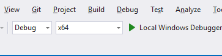

Secondary Development Guidelines
1. Introduction
AIDI 3.2 provides a user-friendly secondary development assistance feature, allowing users to export customised sample code, models, and documentation based on their AI modules and parameter configurations through the GUI interface. This process not only simplifies the integration workflow, but also ensures that users can efficiently conduct secondary development tailored to their specific business needs, accelerating the deployment of AI technology in real-world industrial applications.
2、Recommended Development Environment
Development system: Win 10/11
Compilation tool: Visual Studio 2022 (minimum support for Visual Studio 2013)
Goal framework: Support NET Framework 4.5 or above
3、Exporting “Visual Studio Sample Project” or “Sample Code”
After completing model training, click on “Model - Model and Sample Code Export” in the software toolbar to export the “Visual Studio Sample Project” or “Sample Code”.

3.1 Exporting Sample Project
In the pop-up window under “Export Format”, select “Export Sample Project”.
3.1.2 Select the “Visual Studio version”.
3.1.3 Choose the “Select Programing Language”, “Select Module” and “Select Export Path” Click the “Export Model” button.
3.1.1 Exporting C++ Sample Project
After completing the export, the Visual Studio sample project will include the following C++ project files.
2.Open the solution file with the “.sln” extension. Then, open the “Project - Properties” window, ensure that the “Configuration” and “Platform” settings are correct, and change the C++ language standard to “ISO C++ 17 Standard.”
3.Click the “Local Windows Debugger” button, and the code will execute correctly.
3.1.2 Exporting C# Project
1.After completing the export, the Visual Studio sample project will include the following C# project files.
2.Open the solution file with the “.sln” extension, then select “Project - Properties” and uncheck “Build - Prefer 32-bit.”
3.Click “Start” and the code will execute correctly.
3.2 Exporting Sample Code
In the pop-up window, select “Export Sample Code - Development Language - Module - Path - Model Name,” then click the “Export” button to complete the sample code export.
3.2.1 Exporting C++ Code
1.After completing the C++ sample code export, the software will generate the following files.
2.Open Visual Studio and create a C++ Console Application.
3.In the project, select the x64 (AIDI does not support x32; the configuration manager must select 64-bit).

4.Add the example.cpp file exported by AIDI to the “Source Files” folder.
5.In “Project - Properties - Configuration Properties - VC++ Directories - Include Directories,” add the required header file directory, as shown below，Example:
“Installation Directory\AIDI-3.2.0-stable-20240822\develop\C++\include”
“Installation Directory\AIDI-3.2.0-stable-20240822\develop\C++\lib”
6.In “Project - Properties - Configuration - Linker - Input - Additional Dependencies,” add “visionflow.if.lib”
7.If using Debug mode, go to “Properties” -> “Linker” -> “Debugging” and ensure that the “Generate Debug Info” field is set to “Generate Debug Information (/DEBUG).”
8.Click the Debugger button.
9.The correct execution result is as follows.

3.2.2 Exporting C# Code
After completing the C# sample code export, the software will generate the following files.
2.Open Visual Studio and create a C# Console Application.
3.In the project, select the x64 (AIDI does not support x32; the configuration manager must select 64-bit).
4.In the “Solution Explorer”, right - click on the project, select “Add”, and then add the exported “example.cs” file and the AIDI file located at “Installation Directory/develop/csharp/visionflow.cs” to the project.